Modelica Newsletter 2013-2
Newsletter #2 of 2013 (News from Modelica Association, from Modelica related projects and from Modelica tool vendors)
Table of Contents
- Letter from the Board
- Modelica Association News
- Modelica'2014 Conference in Lund
- Modelica 3.2 Revision 2
- Modelica Standard Library 3.2.1
- Modelica Open Source Tables
- Modelica Compliance Test Library
- FMI Cross-Check Rules
- Modelica CSV File Comparision Tool
- Modelica Library Webpage Improved
- Modelica User Group in Saxony
- Modelica User Group in Baden-Württemberg
- Educational News
- Training Courses for Modelica and TIL
- Dymola/Modelica Training in German
- Dymola and Modelica Training Courses in UK
- Certified Dymola and Modelica Courses
- Wolfram Technology Conference
- Workshop Mod4Sim 2014
- Library News
- New solution for Driver-in-the-loop Simulators
- Optimization Library 2.2 for Dymola
- TIL Suite - Modeling Thermal Systems (version 3.1.1)
- Hydronics Library Version 2.0
- Advanced Hydraulics Library for MapleSim
- Modelon Battery Library 1.0
- Modelon Fuel Cell Library 1.2
- Modelon Heat Exchanger Library 1.0.1
- Vapor Cycle Library 1.0
- Vendor News
- FMI Blockset for Simulink 1.2
- AMESim Rev 13 Coming This Fall
- TLK's DaVE enables easy visualization of FMU simulations
- 16th ITI Symposium in Dresden
- JModelica.org 1.11
- OpenModelica 1.9.0 with improved GUI and MSL3.2.1 support
- FMI Add-In for Excel version 1.2
- FMI Toolbox for MATLAB/Simulink version 1.6
- Dymola 2014
- MapleSim 6.2 Released
Letter from the Board
Dear Modelica interested,
The first Modelica Conference took place in 2000 at Lund University, in Lund, Sweden. In March 2014, the 10th Modelica Conference will take place - again at Lund University. Hubertus Tummescheit (from Modelon) and Karl-Erik Årzén (from Lund University) are organizing it together with the Modelica Association. We hope you will join us in order to meet and exchange information with members of the growing industrial and academic community of Modelica and FMI users and developers. For more details, see below.
One focus of the Modelica Association in 2013 was quality improvement and improving the compatibility between Modelica tools. For this, the following actions have been performed:
- The Modelica Standard Library version 3.2.1 (see below) was released in August. The main emphasis was to fix all compliance issues between tools. For example, there had been about 15-20 vendor specific annotations. All of them have been inspected and have either been standardized in the Modelica Specification 3.2 revision 2, or have been removed, since they are no longer needed. Most important, all the ~700 examples in packages Modelica and ModelicaTest have been improved so that initialization is well-defined and no tool heuristic is needed to solve the initialization problems, in order that all tools can produce the same results. In some cases, classes have been re-formulated to help some tools if they do not yet support particular language features. The Modelica package has now been tested intensively with different tools (CyModelica, Dymola, JModelica.org, OpenModelica, Maplesim, MWorks, SimulationX).
- For some time, the Modelica Standard Library supported different types of tables relying on a C-implementation. However, only the calling interface of the C-interface was standardized and tool vendors had to provide their own implementation. In order to significantly reduce this implementation effort for the tool vendors, to guarantee that the tables of all tool vendors give the same results, and to add missing features, the Modelica Association made a "call for quotation" for an open source table implementation. ITI GmbH won this call and implemented the basic functionality in C (interfaced to Modelica). Therefore, MSL 3.2.1 has now full C source code for its tables (see below) including new features like support for MATLAB binary formats v6 and v7, and support for differentiating the table outputs.
- Several issues the Modelica Standard Library resulted in clarifications and improvements to the Modelica Language Specification. Since most Modelica tools support Modelica 3.2 (and not yet Modelica 3.3), a new revision of 3.2 (see below) was built with these changes.
- In order to improve tool compatibility, the Modelica Association made a "call for quotation" to build up a Modelica Test Suite based on a new test annotation. The Open Source Modelica Consortium won this call and provided recently a test suite with more as 1000 tests (see below). During the development of this test suite, some corner cases of Modelica have been identified where there are different interpretations of the standard by the tool vendors. These issues have been clarified and fixed in Modelica 3.2 rev. 2. This test suite shall help tool vendors to improve their tools, and to identify issues with the Modelica specification. It will be further developed for future Modelica releases.
- The Modelica Association made still another "call for quotation" to implement a tool for automatic comparison of simulation results of different Modelica tools. ITI GmbH won this call and provided the expected software (see below). The goal is that the Modelica Association provides reference simulation results for all examples in new releases of packages Modelica and ModelicaTest. Using the comparison tool, tool vendors can now verify in an automated way that their tool produces similar results (within a defined margin). If different results are produced, the Modelica Association and the tool vendor need to clarify and fix the issue before a new release of MSL.
The approach to make "calls for quotations" was very successful and the Modelica Association plans to proceed in a similar way in the future. If you have suggestions for improving open source software for Modelica, the Modelica Standard Library, and for FMI, where it might be useful that the Modelica Association finances an activity, please fill a trac ticket with a description. Currently, the Modelica Association plans to further improve the table functionality and is collecting suggestions for a call in ticket 1153.
Of course, the Modelica Association is also working on new features. Especially, via projects like MODRIO, CleanSky, and others, a lot of interesting developments are currently under way.
One focus of the FMI group in 2013 was improving the tool compatibility of FMUs. For this, the Modelica Association paid for the development of an FMI Compliance Checker, tool vendors provided exported FMUs on the FMI Subversion server to be used in compatibility checks, and FMI cross check rules have been published to test compatibility between FMI tools. The actual test results are available on the FMI web site.
At end of 2012 the FMI 2.0 Beta 4 draft was published. At the start of 2013, some issues were detected with this draft. Most importantly: virtual or real algebraic loops between FMUs can be handled properly during continuous-time phases, but not at events and during initialization. Since then the draft specification has been improved, a test library of Modelica models with various types of algebraic loops between FMUs has been developed, and a prototype in Dymola was built and the design evaluated with the test library. The FMI group expects the release candidate for FMI 2.0 in the next few weeks. In order to guarantee a stable and realizable specification, the final release will be done as soon as a sufficeint number of tools pass the FMI Compliance Check Rules.
If you have interesting news for the Modelica community, please contact the newsletter editor (Michael Tiller) for information on how to submit newsletter articles for possible inclusion in the next newsletter. The deadline for articles for the next newsletter is Jan. 10, 2014.
Best wishes from:
Martin Otter (Chairman of the Modelica Association)
Modelica Association News
Modelica'2014 Conference in Lund
The Modelica Association announces the 10th International Modelica Conference to be held at the Lund University Campus in Lund, Sweden on March 10 - 12, 2014. It is organized together with Modelon and Lund University.
The Modelica Conference is the main event for users, library developers, tool vendors and language designers to share their knowledge and learn about the latest scientific and industrial progress related to Modelica and the Functional Mockup Interface. The program will cover modeling of complex physical and cyber-physical systems, as well as tools, for a wide range of industrial and research applications. All contributions are peer-reviewed and selected by the Program Committee. In addition to traditional paper presentations and poster sessions, the conference features several Modelica tutorials for beginners and advanced users, as well as vendor presentations, and an exhibition. The last Modelica conference in 2012 was visited by 350 participants from all over the world, and we expect a similar size at this conference.
Call for Papers
Are you interested in submitting a scientific paper? Do you want to apply for the Modelica free library award? Will your product impress everyone at the vendor exhibition? In any case, visit the call-for-papers page and inform yourself about how you can contribute to the conference: https://www.modelica.org/events/modelica2014/call-for-papers
Below you find the most important dates of the conference:
| Nov. 27, 2013 | Submission of papers, libraries, tutorials, vendor presentations, exhibitor applications |
| Dec. 18, 2013 | Notification of acceptance of submitted item |
| Jan. 7, 2014 | End of early registration |
| Jan. 26, 2014 | Submission of final papers and libraries |
This article is provided by Hubertus Tummescheit (Modelon AB)
Modelica 3.2 Revision 2
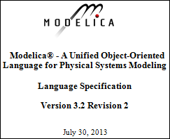
The Modelica language specification 3.2 Revision 2 was released on July 30, 2013. The specification text is available in pdf format and with revision marks with respect to 3.2 revision 1. This is a "clean-up" version of the Modelica specification, in order that:
- all Modelica tool vendors interpret the standard in the same way (so ambiguities, inconsistencies and issues are fixed), and
- the new version of the Modelica Standard Library (version 3.2.1, released on August 2013) is fully compliant to this specification. Previously, the Modelica Standard Library had used some undocumented features, as well as vendor specific annotations. All this should be clarified with this new version of the specification.
Additionally, Modelica Association paid the development of a test suite (see below) in order that tools can check compatibility with this version. For the Modelica users this means that starting with the new version of the Modelica Standard Library, version 3.2.1 (see below), the compatibility between Modelica tools will be much better and it will be easier to utilize different Modelica tools on your models.
Details to the updated specification can be found here.
This article is provided by Martin Otter (DLR-SR)
Modelica Standard Library 3.2.1
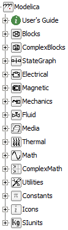
The Modelica Standard Library 3.2.1 has been released on August 14, 2013. It is a backwards compatible, "clean-up" with major emphasis on quality improvement and tool compatibility. The goal is that all Modelica tools will support this package and will interpret it in the same way. Highlights:
- Fully compatible to Modelica Specification 3.2 revision 2.
- The initialization has been fully defined in all example models, in order that all tools can produce the same result without relying on tool heuristics.
- About 400 tickets have been fixed.
- Icons have been re-designed by Wolfram Research to provide a more modern view.
- An open source implementation of the table blocks with new features has been provided by ITI GmbH. For details see the article Modelica open source tables below.
- The Modelica.Media.Air.MoistAir media model has been improved by DLR-SR so that it can be used in a temperature range of 190 ... 647 K (previously: 240 ... 400 K).
- New media models are included in the Modelica.Media library in order to improve the modeling of air conditioning systems especially in aircrafts (developed by XRG Simulation GmbH as part of the Clean Sky JTI project):
- ReferenceAir (30 ... 2000 K, 0 ... 20000 bar).
- ReferenceMoistAir (143.15 ... 2000 K, 0 ... 100 bar).
- Refrigerant R134a (169.85 .. 455 K, 0 ... 700 bar).
- 60 models and blocks and 90 functions are newly included.
This article is provided by Martin Otter (DLR-SR) and Anton Haumer (Modelon GmbH)
Modelica Open Source Tables
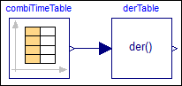
An open source implementation of the table blocks in the Modelica Standard Library 3.2.1 has been provided by ITI GmbH. This work has been paid by Modelica Association. As a result, all parts of package Modelica are now available in a free implementation. Additionally new features have been added to the table blocks by this implementation:
- The table outputs can be differentiated once (see figure to the right).
- Support of binary MATLAB MAT-file formats v6 and v7.
- New option ConstantSegments for parameter Smoothness.
- New option NoExtrapolation for parameter Extrapolation.
- Support of tables provided in the C-Code (usertab.c, for realtime systems without file system).
About 200 test models have been introduced under ModelicaTest.Tables to check for compatibility with previous table implementations and for the new features. Several tools have been used for the tests (SimulationX, Dymola, OpenModelica), as well as several compilers and target platforms (Windows, Linux, dSPACE).
This article is provided by Martin Otter (DLR-SR)
Modelica Compliance Test Library
On September 2, the Open Source Modelica Consortium (OSMC) delivered an open source Modelica Compliance Test Library to Modelica Association. This work has been paid by Modelica Association.
The library consists of about a thousand test cases, at least one for each Modelica language construct, that allow Modelica tool vendors to check their tools' compliance to the Modelica Language Specification 3.2 Revision 2. In the future this is planned to be further extended to Modelica Language version 3.3 and later.
The library is currently available from here but will be made available from the Modelica web after final review by the Modelica Association and interested tool vendors.
This article is provided by Peter Fritzson (Linköping University)
FMI Cross-Check Rules
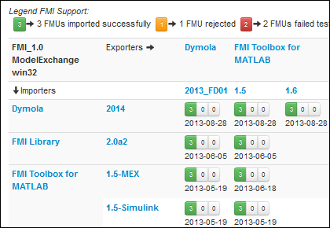
There are now over 40 tools supporting the Functional Mockup Interface. Experience shows that exchange of models via FMI has not always worked reliably. For example, import of an FMU generated by tool A into tool B could fail, due to unexpected function signatures found in the DLL, unexpected directory structure of the zip file, or syntactically incorrect XML. In order to improve this situation, the FMI group took the following actions:
- The Modelica Association sponsored the development of an open source FMI Compliance Checker. This tool checks whether a provided FMU complies with the FMI standard. Tools can use this compliance checker to check their exported FMUs.
- The Modelica Association has reserved a section on our SVN server where vendors can contribute FMUs exported by their tool(s). This allows each tool vendor to check their FMU importing capability against FMUs exported from all other vendors.
- Cross check rules to check the compatibility between tools were created at the end of July 2013. The goal is that vendors check their tools using these rules and the MA then organizes these results into a report on the FMI tool page. Basically, if a tool can import all FMUs provided at the FMI svn server from at least 3 other tools, then a "green" button visualizes the compliance check in the tool table (by clicking on the button, the detailed test results become available). This information allows an end-user to quickly check which tool combinations are checked and where he/she can expect that exchange of FMUs between these tools will work as expected. For tool vendors, this table is an incentive to test the compliance with other tools, in order to be marked as "green" on the tools page (and of course, to help their customers to exchange models with other tools).
This article is provided by Andreas Junghans (QTronic GmbH)
Modelica CSV File Comparision Tool
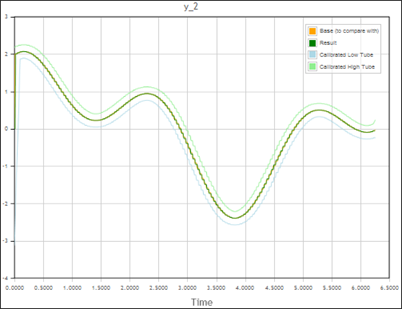
An open source implementation of a CSV File Comparison Tool has been provided by ITI GmbH. This work has been paid by Modelica Association. The purpose of this tool is to test that Modelica tools produce the same simulation results (within a defined margin). This is performed by recursively inspecting two directory hierarchies in which csv simulation result files for a set of models are present, comparing the results and producing a report (a report may contain plots for variables from two tools as in the image to the right).
The CSV File Comparison Tool is available from the public MA subversion server. It contains the following parts:
- /Modelica_ResultCompare contains the sources of the csv compare tool written in C# using Visual Studio 2012.The source code has been checked to be Mono compliant to enable compilation on Linux systems or Mono on Windows.
- /doc contains release notes and other documents that are to be packed in a delivered zip file.
- /deliver contains the releases of the software as 32 and 64-bit Windows binaries in zip archives and a create.bat that allows the automatic creation of the zip files on systems with Windows and Visual Studio 2012
The plan is to use this tool in the future to systematically cross-check simulations results of Modelica tools before releasing a new version of the Modelica Standard Library.
This article is provided by Martin Otter (DLR-SR)
Modelica Library Webpage Improved
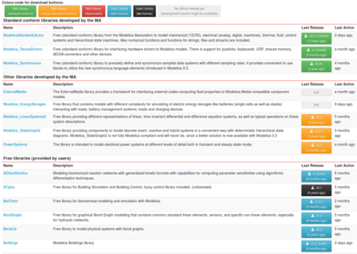
In spring 2013 we renewed the look, feel and functionality of the library webpage #. The motivation was to make it easier for interested users to:
- Get a better overview of existing libraries maintained by the Modelica Association, contributed by users and offered by commercial companies.
- Make it easier to find actively developed libraries.
- Being able to actively contribute to user libraries, by reporting issues and/or submitting patches.
All free libraries listed on # are now stored in Git repositories which are hosted on the free hosting site GitHub. GitHub provides a modern infrastructure for hosting, sharing, and releasing of code, issue tracking, project documentation for any interested user and developer of libraries. Improvements to libraries can even be edited and submitted directly via GitHub's web interface.
We hope that this improved way of managing user libraries will help revitalize old but still very useful Modelica libraries and will help to trigger the development of new open-source libraries by the Modelica community.
This article is provided by Dietmar Winkler (Webmaster of the Modelica Association)
Modelica User Group in Saxony
ITI GmbH and Fraunhofer IIS EAS founded the Modelica Users' Group in Saxony (Germany) on April, 24th, 2013 in Dresden (Germany).
Aims of the Users' Group are meeting Modelica interested people, establishing personal contacts in Saxony, support in answering Modelica related questions, and pooling of Modelica expertise within the region. An essential point is pushing Modelica in applications by integrating actual as well as potential Modelica users, especially in industry. One important way is promoting Modelica in education.
Up to now the Users' Group met twice. The more than 20 members, which come from research, education, and industry, presented papers on their actual Modelica-related fields of work. MA members were informed about the last Modelica Design Meeting. Some attendees mentioned in short notes their problems or their ideas, which were then discussed with other members of the group.
The Users' Group is tool neutral, German speaking, and open to all Modelica interested people. The membership is free.
The next meeting is scheduled for October, 16th, 2013, at 5 p.m. and will be hosted by TU Dresden.
- Web site:
- www.modelisax.de
- Contact speaker:
- christoph.clauss@eas.iis.fraunhofer.de
This article is provided by Christoph Clauss (Fraunhofer) and Andreas Uhlig (ITI GmbH)
Modelica User Group in Baden-Württemberg
The Modelica Users' Group (MUG) in Baden-Württemberg (Stuttgart, Germany) has already met twice with growing interest.
The next meeting will be on October 10th, 2013 from 17:00 to app. 19:00 at the Softwarezentrum, Otto-Lilienthal-Straße 36 (Medienraum D076), Böblingen-Hulb. The program includes a presentation on "Simulation von Baumaschinen mit Modelica", information about the last Modelica Design Meeting. There will be plenty of additional time to exchange information as well.
For more information and an invitation contact Sven Rutkowski.
This article is provided by Ingrid Bausch-Gall (BAUSCH-GALL GmbH)
Educational News
Training Courses for Modelica and TIL
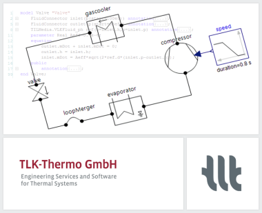
TLK-Thermo offers two day Modelica training courses for learning basic and advanced object oriented modeling. The Modelica course is an introduction to the most important features of Modelica, including numerical aspects. With many practical exercises the participants will learn how to design and implement Modelica libraries (not only within thermal science).
Furthermore, we are offering a one day course for thermal system modeling with the Modelica library TIL. The training course is directed towards simulation and modeling specialists with basic knowledge of the Modelica programming language. It can be seen as an advanced course to the basic Modelica training.
Upcoming courses:
- Modelica training: September 17th - 18th, 2013
- Introduction to TIL: September 19th, 2013
For further Information see www.tlk-thermo.com
This article is provided by Matthias Kwak (TLK-Thermo GmbH)
Dymola/Modelica Training in German
BAUSCH-GALL GmbH offers the following 2-day training classes for Dymola and Modelica in German language either in our office or at your site:
- Modeling and simulation with Dymola and Modelica (by Martin Otter, Chairman of the Modelica Association) on November 4th-5th, 2013
- Introduction to Dymola and Modelica on December 2nd-3rd, 2013
Information about training courses of BAUSCH-GALL GmbH. All classes are also offered at your location.
This article is provided by Ingrid Bausch-Gall (BAUSCH-GALL GmbH)
Dymola and Modelica Training Courses in UK

There are still spaces available on the Dymola and Modelica training course being run by Claytex in October. The Introduction to Dymola and Modelica course will be run at our offices in the UK from the 22nd to 24th October and it is open to all users of Dymola and Modelica.
For further details on our training courses and schedule please see http://www.claytex.com/training/.
This article is provided by Mike Dempsey (Claytex Services Limited)
Certified Dymola and Modelica Courses

Modelon has an extensive Training Portfolio for both beginners and advanced users. We offer regular certified Dymola training as well as training in Modelica and library/domain specific training. We have scheduled courses in Europe and USA, and give courses world-wide on demand. Next upcoming training events are:
- September 23-27, Göteborg, Sweden: Dymola Introduction Course
- October 14-18, Munich, Germany: Dymola Introduction Course
- October 21-25, Ann Arbor, MI: Dymola Introduction Course
- November 25-29, Lund, Sweden: Modelica Introduction Course, Dymola Introduction Course, Mechanics Modeling Course, Thermofluid Modeling Course, Air Conditioning Introduction Course, Vehicle Dynamics Introduction Course, Engine Dynamics Introduction Course, Hydraulics Introduction Course, Liquid Cooling Introduction Course
- December 9-13, Munich, Germany: Dymola Introduction Course
This article is provided by Johan Andreasson (Modelon AB)
Wolfram Technology Conference
Learn more about Modelica modeling, simulation and design with Wolfram SystemModeler and Mathematica at the Wolfram Technology Conference in Champaign, Illinois, USA. The conference features multiple Wolfram SystemModeler talks, including presentation of upcoming features. It is also an excellent opportunity to learn more about all major technologies and the many applications made possible with Wolfram technology. The conference takes place October 21-23, 2013.
For more info visit www.wolfram.com/events/technology-conference/2013/.
Wolfram also offers a half day training, "Extending Wolfram SystemModeler with Mathematica", the day after the conference. This course is for those who are interested in a deeper understanding of how Wolfram SystemModeler, Mathematica, and Modelica work together. The course covers different ways to create models and components, model verification, and visualizing simulation results, as well as simulation control.
For more info visit: www.wolfram.com/events/technology-conference/2013/training.html
This article is provided by Jan Brugård (Wolfram MathCore)
Workshop Mod4Sim 2014
Call for Papers: 4th International Workshop on Model-driven Approaches for Simulation Engineering, part of the Symposium on Theory of Modeling and Simulation (SCS SpringSim 2014)
The workshop aims to bring together experts in model-based, model-driven and software engineering with experts in simulation methods and simulation practitioners, with the objective to advance the state of the art in model-driven simulation engineering. Contributions covering Modelica and FMI are especially welcome.
April 13-16, 2014, Tampa, FL (USA)
Papers Due: November 1, 2013
Accepted papers will be published in the conference proceedings and archived in the ACM Digital Library, IEEE Xplorer and IEEE CS Digital Library. The Symposium is co-sponsored by IEEE.
For further details, please refer to http://www.sel.uniroma2.it/Mod4Sim14
Contact Information
Daniele Gianni and Arnaud Cuccuru(workshop co-chairs)
Emails: danielegmail-mod4sim@yahoo.it and arnaud.cuccuru@cea.fr
This article is provided by Daniele Gianni (European Space Agency)
Library News
New solution for Driver-in-the-loop Simulators
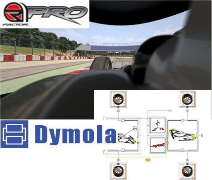
Claytex have developed a new Modelica based solution for Driver-in-the-loop Simulators. Our new Simulator library enables Modelica models based on the Vehicle Dynamics library or VDLMotorsports library to be automatically compiled and plugged in to driving simulators based on R Factor Pro. The solution has been already been proven on a number of motion platform and desktop simulation environments including those from Ansible Motion.
In addition the VDLMotorsports library has been extended to provide support for NASCAR and IndyCar race cars in addition to the existing support for Formula 1 and Sports Cars. The range of templates and experiments in the library is now enabling teams to very quickly develop their DiL solutions using Dymola.
This article is provided by Mike Dempsey (Claytex Services Limited)
Optimization Library 2.2 for Dymola
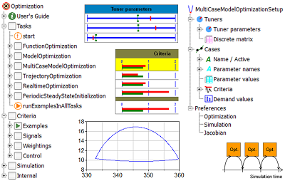
A new version of the Optimization Library from DLR-SR is available. The Optimization Library enables the user to interactively define and solve different types of multi-criteria optimization tasks. The new features of version 2.2 are:
- Advanced parallel simulation runs:
- Parallel Multi simulation
- Parallel simulations on a distributed Linux cluster (support for parallel simulations on multi-core machines was added in the previous release)
- Simulation package to use parallel simulations independently of optimization runs
- Extended task Trajectory Optimization:
- Support of free end time problems
- Start and end conditions (also derivatives) of control functions
- Separate additional tuners (e.g. initial values of states)
- Improved Optimization algorithms:
- Genetic algorithm uses parallel simulation runs.
- Simplex method can handle equalitiy constraints.
- Improved Pattern search algorithm.
The library is available since the release of Dymola 2014.
This article is provided by Andreas Pfeiffer (DLR-SR)
TIL Suite - Modeling Thermal Systems (version 3.1.1)

The Software package TIL Suite contains libraries for steady state and transient simulation of thermodynamic systems.
TIL Suite consists of the following components:
- TIL - model library for components of thermal systems
- TILMedia - model library providing thermo-physical properties
- TILFileReader - Imports tabular data from files
TIL Suite has been applied to simple and fast systems as well as to very complex and detailed ones, e.g. Vapor Compression, Ejector Heat Pump, Fuel Cell, Secondary Loop, Transport Refrigeration, Heat Pump Dryer, Sorption Refrigeration, Thermoelectric, Kalina Cycle, Supermarket Refrigeration, Solar Organic Rankine, Cooling System, Air Handling Unit, Climatic Wind Tunnel, Industrial Refrigeration.
What is new in this release?
Further Heat Exchanger Geometries, Moving Boundary discretization of heat exchangers, models for thermostatic expansion valves, new ejector models, better support for mixtures, enhanced controller, better support for code export, further acceleration of calculation speed.
For further Information see www.til-suite.com
This article is provided by Matthias Kwak (TLK-Thermo GmbH)
Hydronics Library Version 2.0
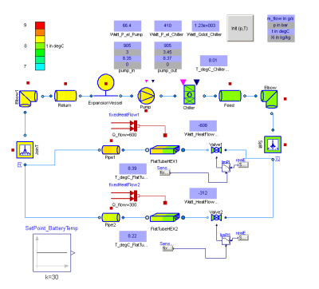
Hydronics Library 2.0
The Hydronics Library is developed by XRG Simulation GmbH and allows detailed modeling of thermo-hydraulic systems including heat exchangers for humid air and liquids. Version 2.0 of this library has been released in September.
This update includes:
- Support of stream connectors for liquid components
- Summeries in each component model
- New mixing valve model
- New flat tube model
- New adapter models for coupling to AirConditioning (trademark of Modelon AB)
- Added callibration factors for non-generic pressure loss and heat transfer models
- Modelica.Fluid compatible interfaces and models
Our range of Modelica Libraries is available at
http://bausch-gall.de/molib.
For more information, please contact
info@bausch-gall.de.
This article is provided by Ingrid Bausch-Gall (BAUSCH-GALL GmbH)
Advanced Hydraulics Library for MapleSim
Maplesoft has added the MapleSim Hydraulics Library® from Modelon to the MapleSim product family. This new component library is the result of a technology partnership with Modelon, the renowned developer of high-quality Modelica libraries. With the MapleSim Hydraulics Library from Modelon, engineers can seamlessly incorporate industry-tested hydraulics components while continuing to take full advantage of all the modeling, analysis, and simulation abilities of MapleSim.
The MapleSim Hydraulics Library from Modelon includes over 200 components for modeling pumps, motors, cylinders, restrictions, valves, hydraulic lines, lumped volumes, and sensors. It enables engineers to produce very high-fidelity models by accounting for compressible oil and cavitation effects, resulting in an extremely accurate view of system dynamics.
“Hydraulics systems are notoriously difficult to model with high accuracy, but so important to understanding system-level behavior,” says Dr. Laurent Bernardin, Executive Vice-President and Chief Scientist at Maplesoft. “Now, as a result of our partnership with Modelon, customers can take instant advantage of all the great expertise and experience that has gone into the Modelon Hydraulics Library from inside the MapleSim environment, so they can meet, and exceed, their system-level requirements.”
“Modelon is committed to offering premium libraries to the entire Modelica community, and we are excited to bring our well-established Hydraulics Library to MapleSim customers,” says Dr. Hubertus Tummescheit, Chief Executive Officer of Modelon. “The release of the MapleSim Hydraulics Library from Modelon demonstrates the power of the Modelica standard platform for the systems engineering community.”
This article is provided by Tina George (Maplesoft)
Modelon Battery Library 1.0
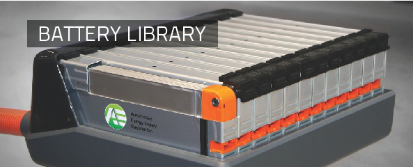
With its newly released Battery Library, Modelon provides professional simulation support for the design and integration of electrical energy storage systems. This commercial library is developed by engineers with industrial and academic expertise.
The models calculate the electrical performance and thermal behavior for single rechargeable cells and whole systems. Easy to adapt in terms of the storage system complexity, geometry, statistical effects and electrical precision the Battery Library is ideal to be used in research and development. Modeling single batteries as well as entire systems comprising batteries like hybrid electrical vehicles is now greatly simplified.
Modelon Battery Library at a glance:
- Built-in electrical optimization tool for obtaining the electrical parameters out of simple current measurements.
- Easy modeling of battery packs with scalable preconfigured thermal models for battery systems including interfaces for cooling and heating.
- Ready-to-use implementation of important ISO norms for batteries.
- Simulation support of lithium-ion, lead, and nickel based cells.
- Preconfigured thermal models for prismatic and cylindrical cells.
As an added bonus the Battery Library offers efficient ways to estimate the battery's ageing behavior and takes the consequences for performance and heating into account.
The Battery Library includes various examples for battery packs combined with control algorithms. The library is fully compatible to the Modelica Standard Library and all Modelon Libraries.
For more information visit www.modelon.com or contact sales@modelon.com.
This article is provided by Anton Haumer (Modelon GmbH)
Modelon Fuel Cell Library 1.2
Fuel Cell Library is a Modelica model library for modeling, simulation, analysis, and control design of fuel cells, especially for PEMFC (Polymer Exchange Membrane) and SOFC (Solid Oxide) based fuel cell systems. Fuel Cell Library contains what is typically needed to research, design, and configure fuel cell systems, including components, subsystems, templates, and media.
The library can be used by all industries that work with fuel cell stacks and systems of the types mentioned such as manufacturers, operators, consultancy companies, and universities active in this field. The flexibility of the tool as well as the extended code and examples implemented in the library makes it easy to get started and useful in a wide range of applications.
Key features:
- Solid oxide fuel cells (SOFC) and Proton exchange membrane fuel cells (PEMFC) in the same tool
- A wide range of reactors for fuel preprocessing and internal reforming, and reactions calculated with various approaches
- Well suited for transient analysis and control design
- Easy to use in any fuel cell application domain
- Handles reformate and other ideal gas mixtures and support for condensation
- Examples
- Stacks with Membranes, Substacks and Stack templates
- Reactors & Reactions
- Burners
- Pipes & Volumes
- Heat exchangers
- Reaction Media
- Balance of plant components
The Fuel Cell Library will be shipped with Dymola from version 2014FD01.
This article is provided by Johan Andreasson (Modelon AB)
Modelon Heat Exchanger Library 1.0.1
Heat Exchanger Library is a Modelica model library for heat exchanger design, dimensioning, and stacking. The library contains flat tube heat exchanger models supporting several flat tube and louvered fin designs. The models accounts for effects of inhomogeneous air flow and temperature distribution and it is possible to model heat exchanger stacking along the air flow path.
The library is suitable for studying the effects of heat exchanger dimensioning and positioning on cooling performance. Heat Exchanger Library has native interfaces to Vapor Cycle Library and Liquid Cooling Library for complete thermal management design. The models can be coupled to CFD-derived boundary conditions on the air side, bridging the gap between CFD and system simulations.
Key features:
- Geometry based heat exchanger models for system simulations
- Friction and heat transfer models for louvered fin designs
- Captures effects of inhomogeneously distributed inlet air flow
- Coupling to CFD data
- Modeling of heat exchanger stacks with different heat exchanger geometries, sizes and positioning
Contents overview: The Heat Exchanger Library will be shipped with Dymola from version 2014FD01.
This article is provided by Johan Andreasson (Modelon AB)
Vapor Cycle Library 1.0
Vapor Cycle Library is a Modelica model library for the design of vapor cycle systems, including vapor compression cycles for heating or cooling purposes as well as Rankine cycles for power generation and waste-heat recovery. Component interaction and dynamic system behavior can be studied at an early design stage.
The library can be used as an integrated part of energy management design for both mobile and residential applications, by combining it with e.g. Liquid Cooling Library, Heat Exchanger Library and other Modelica libraries that cover mechanical and electrical parts of the system such as Electric Power Library.
Vapor Cycle Library is a suitable tool for system and component development in the automotive or aerospace industry, residential cooling and heating as well as, industrial refrigeration. In academics and training the simulation of vapor compression cycle from the library enhances system understanding and gives insight into phenomena and component interactions which otherwise can be difficult to access on a test-rig.
Key features:
- Supreme coverage of different working fluids
- Flexible composition of user-defined system architectures
- Plug and play compatible with other libraries for thermal management
- Transient and steady-state simulation
- Two- and one-phase fluid flow with a choice of different heat transfer and pressure loss correlations that also cover phase change
- Ready-to use component models with example parameterization as well as interfaces and templates for user-specific modifications
The Vapor Cycle Library will be shipped with Dymola from version 2014FD01.
This article is provided by Johan Andreasson (Modelon AB)
Vendor News
FMI Blockset for Simulink 1.2
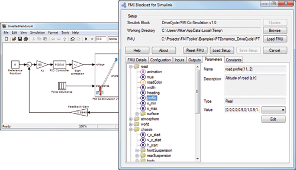
Claytex have released a new version of the FMI Blockset for Simulink, version 1.2. This new release introduces new features in the editor and is compatible with FMU's produced by Dymola, Silver and SimulationX and has been tested with Simulink R2011b and later (supporting both 32 and 64 bit versions).
The cross check results using the FMI Blockset for Simulink with FMU's from Dymola, Silver and SimulationX have been published on the FMI website, see https://www.fmi-standard.org/tools.
This article is provided by Mike Dempsey (Claytex Services Limited)
AMESim Rev 13 Coming This Fall
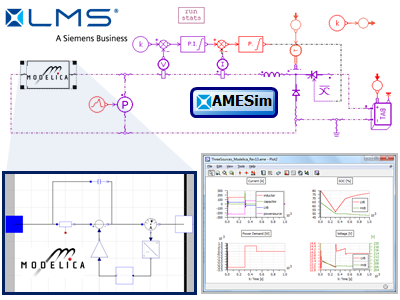
LMS Imagine.Lab AMESim Rev 13 will be shipping in late November. With the latest release, AMESim's Modelica Platform continues to evolve both in form and in function. With its revamped workflow and path list editor, the new Modelica Editor provides a more user-friendly experience for navigating model libraries, and creating models graphically and/or textually. In addition, the upgrades to the compiler provide more efficient code generation for faster simulations as well as increased support for the Modelica Language Specification, improving users' ability to leverage the power of Modelica for modeling complex physical systems.
AMESim Rev 13 couples the strengths of the Modelica modeling language with the strengths of the AMESim analysis framework. By integrating Modelica models into the AMESim platform, users have access to a wide array of analysis tools for Plotting, Linear Analysis, Design Exploration, Animations, Custom Apps and Scripts, Performance Analysis, etc.
AMESim Rev 13 also increases support for the Modelica Association's FMI Specification. LMS is a member of the FMI steering committee and plays an active role in the definition of the FMI specification through extensive cooperation with other tool vendors. With Rev 13, AMESim now covers the entire spectrum of the FMI 1.0 standard, thus positioning AMESim as one of the most open and powerful platforms for multidisciplinary system simulation.
Please visit the LMS website for more information.
This article is provided by Michael Sasena (LMS International)
TLK's DaVE enables easy visualization of FMU simulations
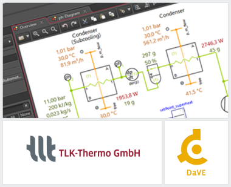
TLK's newest product DaVE allows both online and offline visualization of data from various sources:
- FMI simulation
- NI measurement hardware
- Dymola result files
- CSV files
- TISC co-simulation
DaVE's key features for an effective analysis and visualization at a glance:
- Support of multiple data sources for easy comparison
- Highlighting of important timestamps
- Presentation-mode for result demonstration
- Export into popular image formats and pdf-format
- Various graphical instruments, e.g. 2d-plot with multiple y-axes, each with arbitrary logarithmic and automatic scaling
Current development focuses on combining different data connectors yielding e.g. multi-FMU co-simulation.
For further information see www.viewer-suite.com or contact us at software@tlk-thermo.com
This article is provided by Matthias Kwak (TLK-Thermo GmbH)
16th ITI Symposium in Dresden
For the 16th time now, ITI invites customers and partners from across all industries and scientific backgrounds to its annual user convention. The ITI Symposium as a forum for modeling and simulation solutions in product development has made a name for itself with engineers and researchers all over the world.
This year, ITI expects to welcome more than 150 guests to the symposium in Dresden running from November 12 through 14, 2013. Attendees can choose from a program of as many as over 40 presentations. Speakers from renowned companies, such as ABB, Aggreko, BMW, Daimler, Fraunhofer, Honda Research, Jaguar, Liebherr and Takraf, present prestige projects and versatile application examples.
In all focus areas the symposium includes Modelica specific presentations, especially with regard to automotive, mining, heavy machinery and power generation. ABB will speak about the online optimization of power generation and the re-use of existing Modelica model libraries and their combination with own model components. Modelica based concepts will also be presented by Aker Solutions concentrating on the modeling and analysis of offshore knuckle boom cranes and by EA Systems who develop concepts for decentralized energy management and rural energy supply. Moreover, Numengo and Takraf will talk about Modelica based solutions for fluid power technology. The Austrian Institute of Technology (AIT) will explain the development, modeling and validation of multi-physics battery models in the Modelica language. The approach takes account of thermal influences and the battery age. The simulation models can be used to define the reach of electric vehicles.
In addition there will be talks about the development of the Functional Mock-up Interface (FMI). The interface enables software-, model- and hardware-in-the-loop simulations with dynamic system models from different software environments. Torsten Blochwitz, ITI, will speak about SimulationX and FMI; BMW will present own FMI application scenarios. The Virtual Vehicle Research Center will give a talk about its hardware-software-co-simulation based on real-time systems and FMI.
Visit symposium.itisim.com to find out more about the program and registration.
This article is provided by Manuela Joseph (ITI GmbH)
JModelica.org 1.11

JModelica.org is an extensible Modelica-based open source platform for optimization, simulation and analysis of complex dynamic systems. The main objectives of the project are to create an industrially viable open source Modelica environment, while offering a flexible platform serving as a virtual lab for algorithm development and research. JModelica.org also provides a platform for technology transfer, where industrially relevant problems can inspire new research and where state of the art algorithms can be propagated from academia into industrial use.
Highlights of JModelica.org 1.11:
- Improved runtime logging with a new debugging and analysis framework
- Support for ModelicaError and assert clauses in compiler and runtime
- Support for ModelicaStandardTables in MSL
- Improved compliance including string operations, vectrorization for built-in functions and several new operators supported for FMUs
Highlights already in JModelica.org 1.10:
- Export of FMUs for Co-Simulation
- Import of FMU 2.0b4 in PyFMI
This article is provided by Tove Bergdahl (Modelon AB)
OpenModelica 1.9.0 with improved GUI and MSL3.2.1 support
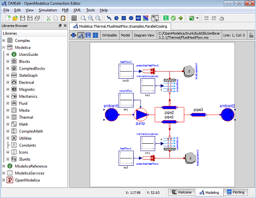
OpenModelica is an open-source model-based cyber-physical mathematical modeling, architectural description and simulation environment intended for industrial and academic usage. Its long-term development is supported by a non-profit organization – the Open Source Modelica Consortium (OSMC), www.openmodelica.org, with many corporate, institutional, and academic members.
The three most important enhancements in the OpenModelica 1.9.0 final release:
- OpenModelica compiler support for the Fluid library without a special flag.
- Good support for the significantly updated library MSL 3.2.1 final version.
- Significantly enhanced graphical user interface in OMEdit including autosave.
In more detail:
- Improved support for the MSL 3.2.1 MultiBody library. All example models now simulate.
- Improved simulation support for many other libraries, e.g. ThermoSyspro, ThermoPower, PlanarMechanics, Bondlib, etc.
- The significantly improved Graphical user interface includes backard wnd forward navigation, enhanced parameter dialog, coordinate system manipulation, search functions, automatic conversion to standard Modelica UTF-8 encoding, and many more improvements.
- New default initialization method that symbolically solves the initialization problem much faster and more accurately. This is the first version that, in general, can initialize hybrid models correctly.
- Prototype support for uncertainty computations, special feature enabled by special flag.
- Much faster matching and dynamic state selection algorithms for the compiler backend..
- Improved tearing algorithm for the compiler backend. Tearing is now used by default.
- New index reduction algorithm implementation.
- Functional Mockup Interface FMI 1.0 co-simulation, with OpenModelica as master, and improved FMI import, as well as support for most of the forthcoming FMI 2.0 standard.
- 3D graphics visualization with the Modelica3D library.
- Parallel algorithmic Modelica support (ParModelica) for efficient portable parallel algorithmic programming based on the OpenCL standard, for CPUs and GPUs.
- The PySimulator package from DLR for additional analysis is integrated with OpenModelica and included in the OpenModelica distribution
- Dynamic optimization with XML export to the CaSAdi package is integrated with OpenModelica.
The development work is organized by the expanding Open Source Modelica Consortium, currently 44 organizations.
For more information, see www.openmodelica.org .
This article is provided by Peter Fritzson (Linköping University)
FMI Add-In for Excel version 1.2
FMI Add-in for Microsoft Excel® enables steady-state and dynamic simulation of physical models in the industry standard spread sheet environment. The FMI Add-In is fully integrated into the Excel user experience. The perfect companion to Dymola and other FMI compliant model authoring tools.
Key features
- Ideal for batch simulations, parameter sweeps, design space exploration with easy-to-use and flexible interface
- Support for co-simulation and model-exchange FMUs
- Support for parallel execution
- Perfect for lean and easy-to-use deployment of simulation models in organizations
- Based on the validated FMI Library and compliant with all major FMI tools
New in version 1.2
- Visual Basic scripting for user extensions and custom solutions
- Workflow improvements
This article is provided by Magnus Gäfvert (Modelon AB)
FMI Toolbox for MATLAB/Simulink version 1.6
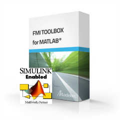
FMI Toolbox for MATLAB® and Simulink® provides systems, control and simulation engineers with a solution for seamless exchange of simulation models between any FMI compliant tool and MATLAB and Simulink. It allows users to combine physical and functional models from different sources for integration on system level to assess and evaluate design choices and performance. The command line interface and the Simulink blockset offer users full flexibility to exploit the simulation and computational power of MATLAB and Simulink to create insight into the interactions and behavior of complex systems.
Key features
- Import of FMU using Simulink blockset with easy-to-use dialog user interface
- Import of FMU using command line interface for scripting
- Support for co-simulation and model exchange FMUs
- Export of Simulink model as FMU
- Based on the validated and proven FMI Library and compliant with all major FMI tools including Dymola
New in version 1.6
- Support for static and dynamic analysis through design-of-experiments
- Unattended installation procedures for enterprise deployment
FMI Toolbox is a product of The MathWorks Connection Program.
This article is provided by Magnus Gäfvert (Modelon AB)
Dymola 2014
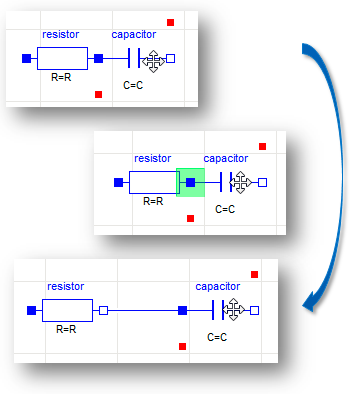
A number of improvements and additions have been implemented in Dymola 2014. In particular, Dymola 2014 provides
Model editing
- Smart connect – drag a new component into the diagram, hover over an existing connector, and a new connection is created when you get the highlight. Also, drop a component on a connection to insert it and connect in one step.
- You can search for components by name and highlight in the graphical editor. This is a benefit in particular for very large diagrams.
Simulation, plotting and post-processing
- Fast Fourier Transform (FFT) is now available as a signal operator in plots, complementing previous operators such as min, max, mean and THD.
- It is possible to create a table of simulation data from an existing plot in one operation. This table can also be easily copied to other tools.
- On request from users, we have added a new numerical integration method in Dymola: CVODE from SUNDIALS.
- Support for FMI 2.0 Beta 4 and improved source code export in FMUs.
Enhanced Modelica support
- Support for synchronous features and state machines according to the Modelica 3.3 specification are now available.
For more information, see http://www.3ds.com/products-services/catia/portfolio/dymola/latest-release.
This article is provided by Dag Brück (Dassault Systèmes AB, Lund)
MapleSim 6.2 Released
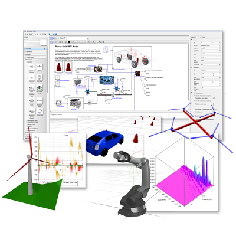
Maplesoft™ has announced a new release of MapleSim™, the advanced system-level modeling and simulation platform. With usability improvements across many different aspects of the interface, MapleSim 6.2 speeds up model development of both simple and complex models. In addition, new and improved add-ons expand the modeling scope of MapleSim to include advanced hydraulics and enhance toolchain connectivity.
In MapleSim 6.2, improvements to the interface give engineers the ability to create models faster than ever before. With new ways to connect components, enhanced line routing that combines improved automatic layout with finer manual control, and more easily managed parameter lists, high-frequency tasks are done more quickly and easily. More advanced features, such as the automatic handling of mass and inertia information for CAD geometry components and a Modelica code view that displays annotations, further reduce the time spent creating models.
Other improvements include expansion of many of the connectivity add-ons that allow engineers to integrate MapleSim into their toolchain. The connectors for Simulink®, JMAG®-RT, VI-CarRealTime, B&R; Auomation Studio, and FMI are all enhanced with this release. As well, a new add-on library, the MapleSim Hydraulics Library™ from Modelon, provides greatly increased capacity to model advanced hydraulics components.
“With its intuitive physical modeling approach, ‘white-box’ modeling environment, and extremely fast auto-generated code, MapleSim helps design engineers meet and exceed their system level requirements,” says Dr. Laurent Bernardin, Executive Vice-President and Chief Scientist at Maplesoft. “MapleSim 6.2 incorporates many suggestions from our customers to further enhance the model development process itself, so model creation is faster and easier than ever.”
This article is provided by Tina George (Maplesoft)
In this Newsletter, the following registered trademarks are referenced:
Dymola® and SIMULIA® are registered trademarks of Dassault Systèmes.
Excel®is a registered trademark of Microsoft.
Maplesoft® and MapleSim® are registered trademarks of Waterloo Maple Inc.
MATLAB® and SIMULINK® are registered trademarks of The MathWorks Inc.
Modelica® is a registered trademark of the Modelica Association.
SimulationX®is a registered trademark of ITI GmbH.